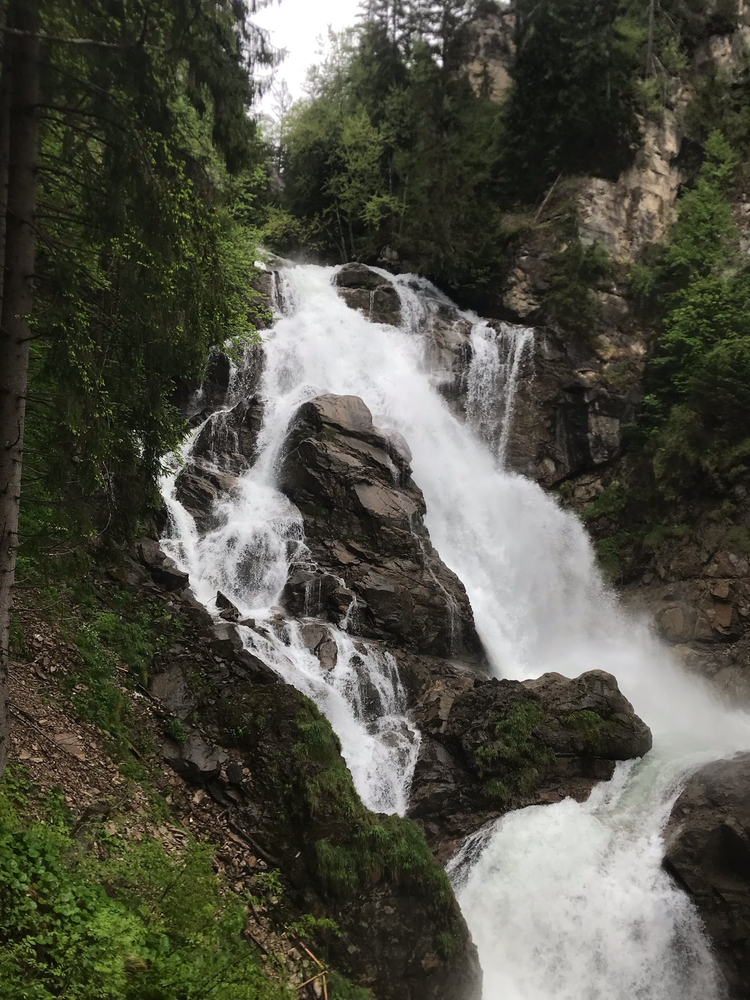
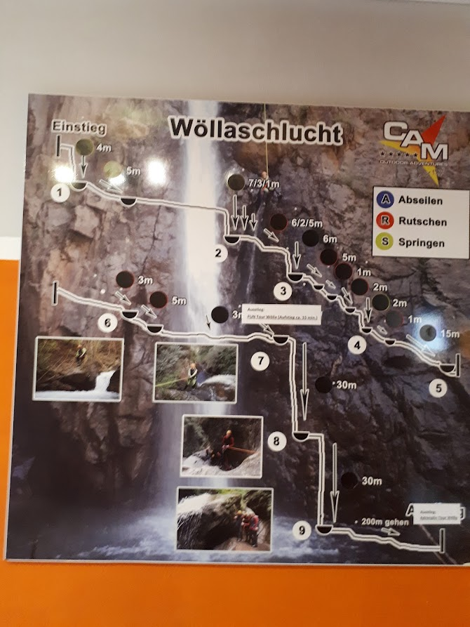
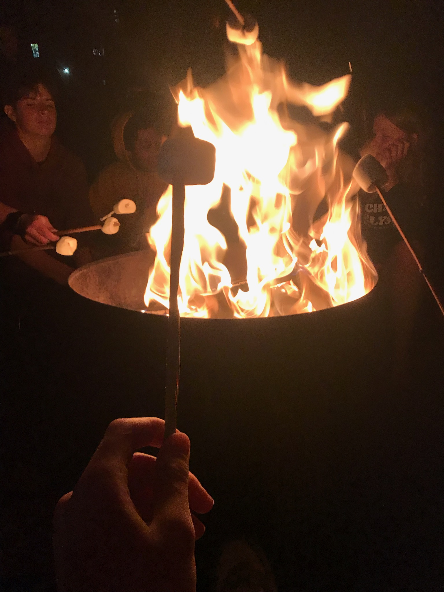
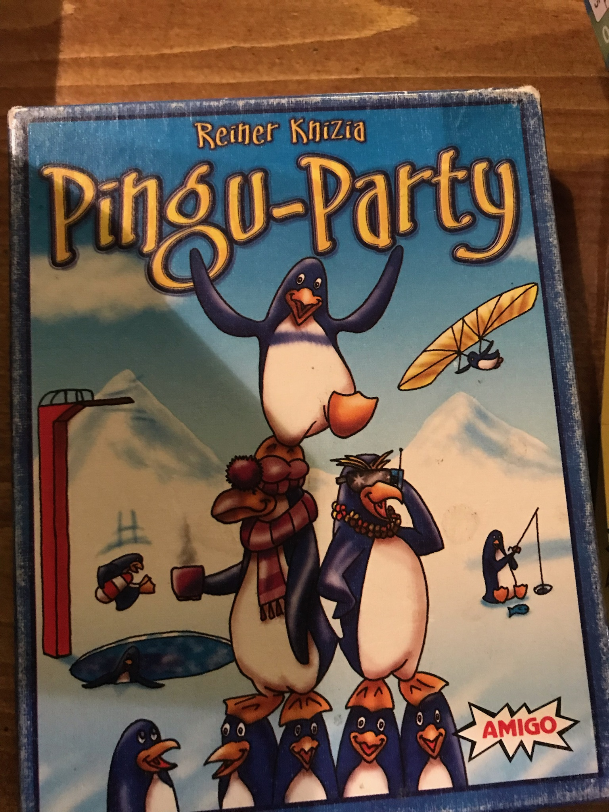

Activiteiten
Klimmen
Dinsdag gingen we eerst klimmen. We zouden gaan rotsklimmen, maar door de regen was het te glad. Daarom bleven we op het complex waar we verbleven en gingen we daar en klimparcour doen en een muur beklimmen.

Paintballen
Na het klimmen gingen we paintballen. We speelden in twee teams tegen elkaar. Het veld waar we gingen paintballen had een heuvel en veel bomen en obstakels.

Wandelen
Woensdag ginen we een wandeling maken. De wandeling was ongeveer 15 km en we stegen meer dan 600 meter. We liepen langs heel veel watervallen, helaas regende het wel de hele dag.
Canyoningen
De laatste dag gingen we canyoningen. We kregen allemaal een wetsuit aan, want de rivier was heel koud. We gingen met de rivier mee naar beneden, terwijl we van rotsen sprongen en gleden.
Kampvuur
We hadden ook een kampvuur gemaakt en marshmallows geroosterd. Het duurde heel lang voordat we het kampvuur aankregen.
Spelletjes
Omdat het veel regende bleven we veel binnen. Daarom speelden we ook veel spelletjes, zoals regenwormen en mountain goats.
